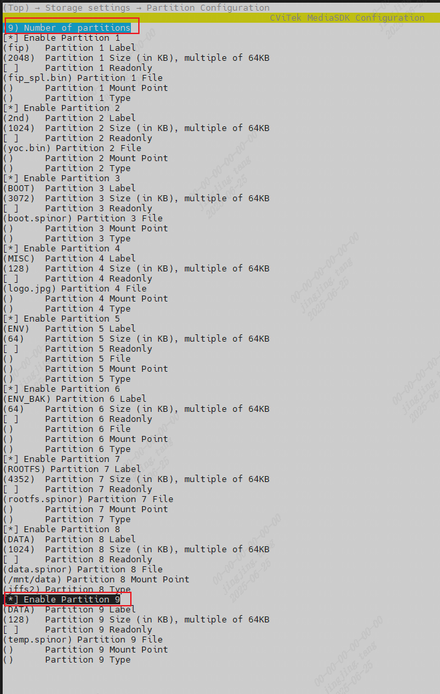

6. Partition Modification¶
6.1. Partition Table Configuration¶
CV184x SDKthepartition tableineachpartitionAdd is build/Kconfig.partitions configuration item, notsameEVB defconfigfilerecordcorrespondingFlash eachpartitiondefault configurationvalue.
executedefconfigcommandselectEVBwhen, firstparse build/Kconfig.partitions file, thenloaddefconfigfileindefault configuration, Finally, generatexmlfileshapeformpartition table, saveis build/partitions.xml.
withcv1842hp_wevb_0014a_spinorisexample:
$ source build/envsetup_soc.sh
$ defconfig cv1842hp_wevb_0014a_spinor
$ file build/boards/cv184x/cv1842hp_wevb_0014a_spinor/partition/partition_spinor.xml
build/boards/cv184x/cv1842hp_wevb_0014a_spinor/partition/partition_spinor.xml: symbolic link to ../../../../partitions.xml
$ cat build/partitions.xml
<?xml version="1.0" ?>
<physical_partition type="spinor">
<!--This is an auto-generated file. DO NOT EDIT manually.-->
<partition label="fip" size_in_kb="2048" readonly="false" file="fip_spl.bin" mountpoint="" type=""/>
<partition label="2nd" size_in_kb="1024" readonly="false" file="yoc.bin" mountpoint="" type=""/>
<partition label="BOOT" size_in_kb="3072" readonly="false" file="boot.spinor" mountpoint="" type=""/>
<partition label="MISC" size_in_kb="128" readonly="false" file="logo.jpg" mountpoint="" type=""/>
<partition label="ENV" size_in_kb="64" readonly="false" file="" mountpoint="" type=""/>
<partition label="ENV_BAK" size_in_kb="64" readonly="false" file="" mountpoint="" type=""/>
<partition label="ROOTFS" size_in_kb="4352" readonly="false" file="rootfs.spinor" mountpoint="" type=""/>
<partition label="DATA" size_in_kb="1024" readonly="false" file="data.spinor" mountpoint="/mnt/data" type="jffs2"/>
</physical_partition>
6.2. Partition Table Interpretation¶
The partition table labels mean:
physical_partitiOn type: flash type.
partition label: partition name.
size_in_kb: partition size (in KB) .
file: name of the referenced image file.
type: (inpartition labelfieldin) file system format.
mountpoint: partition mount path.
CV184x SDK generates the following image files. Each file represents a different partition:
FIP : Bootloader/U-Boot partition
CV184X CA3 usingFSBL+UBOOT architecture, Finally, openpacketafteralsoreuse(FIP)filename, convenientlateruse.
2nd(dual-system) : Yun on Processor (YOC) partition containing
BOOT : Partition for Linux Kernel partition
MISC : Boot Logo partition
ROOTFS : root file system partition
SYSTEM: CVITEK librariespartition containing
DATA : usethisdatapartition
Note: 2ndpartitionisdualsystemspecialhaspartition, onlyindualsystemenvironmentunderstorein
6.3. Modify Partition¶
Modify the Partition Table
After selecting an EVB, use the menuconfig command to modify build/partitions.xml Partition Table.
need tomodifyalreadyhaspartitionsize, candirectlyconnectmodifycorrespondingconfigureitemvalue, see the preceding sections for partition-size alignment;
When adding or removing partitions, firstmodifypartitionnumber, Then, , clear the partitions that are not needed, ororsetnewpartition, as followsFigure shown, save the settings after modification; exiting the menu automatically updates to
build/partitions.xmlPartition Table:When lastpartitionsizedeletenotfill inwhen, generatepartition tablewhenwillautomaticcalculateremaining sizeoperationislastpartitionsize.

for example, onFigure savemodifyafter, morenewas follows:
$ cat build/partitions.xml
<?xml version="1.0" ?>
<physical_partition type="spinor">
<!--This is an auto-generated file. DO NOT EDIT manually.-->
<partition label="fip" size_in_kb="2048" readonly="false" file="fip_spl.bin" mountpoint="" type=""/>
<partition label="2nd" size_in_kb="1024" readonly="false" file="yoc.bin" mountpoint="" type=""/>
<partition label="BOOT" size_in_kb="3072" readonly="false" file="boot.spinor" mountpoint="" type=""/>
<partition label="MISC" size_in_kb="128" readonly="false" file="logo.jpg" mountpoint="" type=""/>
<partition label="ENV" size_in_kb="64" readonly="false" file="" mountpoint="" type=""/>
<partition label="ENV_BAK" size_in_kb="64" readonly="false" file="" mountpoint="" type=""/>
<partition label="ROOTFS" size_in_kb="4352" readonly="false" file="rootfs.spinor" mountpoint="" type=""/>
<partition label="DATA" size_in_kb="1024" readonly="false" file="data.spinor" mountpoint="/mnt/data" type="jffs2"/>
<partition label="DATA" size_in_kb="128" readonly="false" file="temp.spinor" mountpoint="" type=""/>
</physical_partition>
Specify a Partition Table
To use a specified partition table, modify the partition-table symbolic link in the EVB configuration directory build/boards/cv184x/cv1842hp_wevb_0014a_spinor/partition/partition_spinor.xml